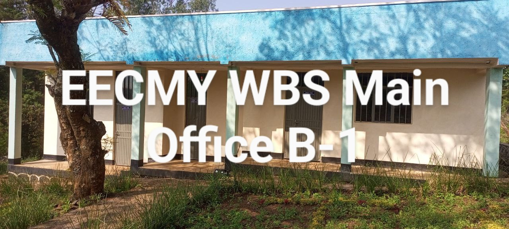
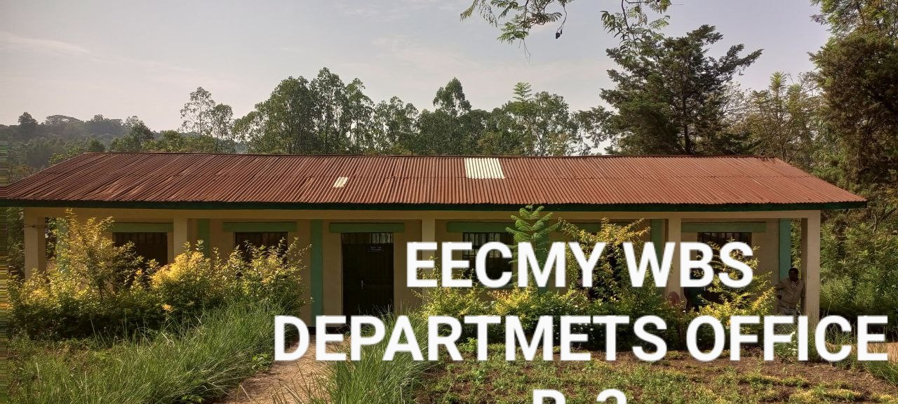
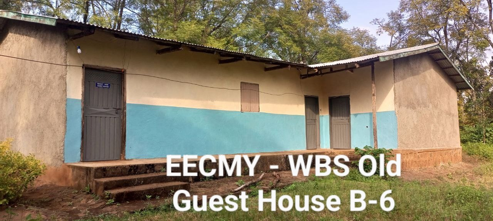
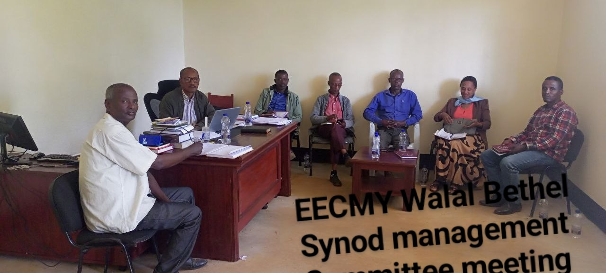
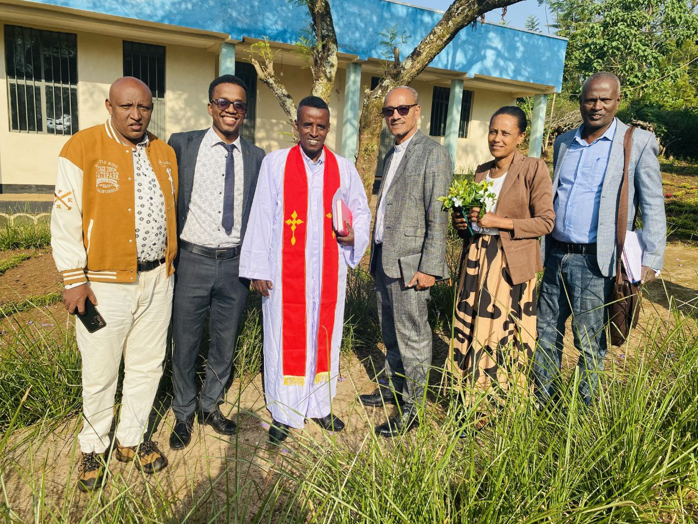
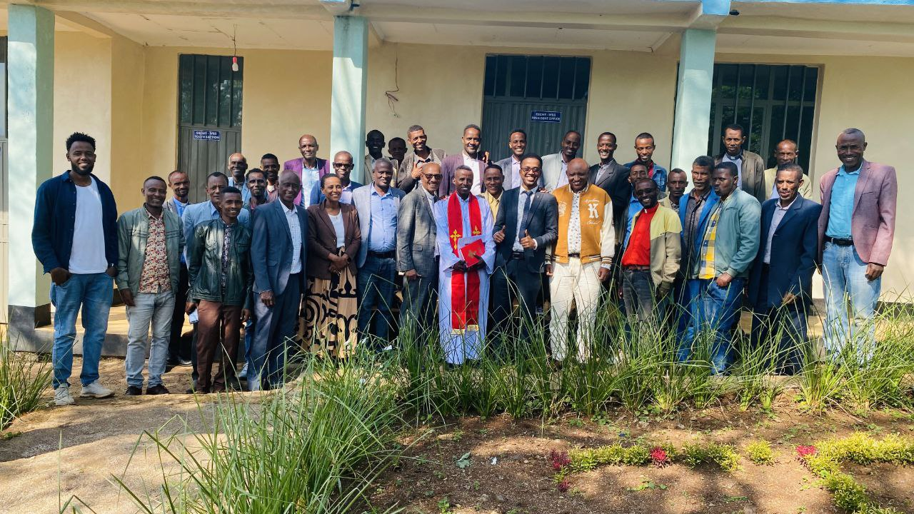

A vibrant and spiritually committed Synod serving the Kellem Wollega Zone of Western Ethiopia, integrating spiritual growth with crucial social and economic development.
Rooted in early 20th-century missionary efforts, growing into a vibrant spiritual center.
Historical Legacy
A Legacy of Faith and Service
The Walal Bethel Synod is a significant and growing unit of the Ethiopian Evangelical Church Mekane Yesus (EECMY). Formally established in 2022, it serves as a spiritual and administrative center for numerous congregations across the Kellem Wollega Zone in Western Ethiopia.
1919
Missionary Foundation
The origins are deeply rooted in the early 20th-century missionary efforts of the American Presbyterian Church, particularly Dr. Alexander Lambie in 1919.
1942
Western Wollega Bethel Synod
Over decades, reaching remarkable milestones leading up to the establishment of the WWBS in 1942 as a landmark in Ethiopian Protestant Christianity.
2022
Walal Bethel Synod Formed
Forming the localized Walal Bethel Synod in 2022, becoming fully operational in January 2023 to bring governance closer to communities.
Today
Dynamic Spiritual Growth
Today, the Synod serves 293 congregations with over 145,000 members and 238 pastors and evangelists, integrating spiritual growth with crucial social and economic development.
Historical Background & Regional Presence
The origins of the EECMY Walal Bethel Synod are deeply rooted in the early 20th-century missionary efforts of the American Presbyterian Church, particularly the work of Dr. Alexander Lambie, who arrived in Western Ethiopia in 1919. Lambie's medical and evangelistic outreach among the unreached communities of Western Wollega laid the groundwork for a burgeoning evangelical movement. By 1942, these efforts culminated in the establishment of the Western Wollega Bethel Synod (WWBS), marking a major milestone in the history of Ethiopian Protestant Christianity.
As the Christian population grew, the WWBS faced increasing administrative and geographical challenges, eventually leading to the decision to divide the Synod into smaller, more manageable units. After a decade of careful planning and consultations, the Walal Bethel Synod was officially formed in December 2022, becoming fully operational in January 2023. It now serves 293 congregations with over 145,000 members, 238 pastors and evangelists, and is supported by 12 presbyteries and 4 work areas. The Synod oversees the spiritual and administrative needs of these congregations, providing leadership, pastoral care, and community development. The division of the Western Wollega Bethel Synod into the Walal Bethel Synod was intended to enhance local governance and ministry, allowing for a more effective response to the needs of the rapidly growing congregations.
The establishment of the Walal Bethel Synod has not only strengthened the administrative capacity of the church but has also revitalized evangelistic efforts in the region. The Synod operates in the Kellem Wollega Zone, particularly in the woredas (districts) of Dalle Wabera, Gawo Kebe, Jimma Horro, Dale Sadi, Lalo Kile, Yubdo and Sadi Chanka fully and Ayira Guliso and Ganji Districts partially. Its work is shaped by a holistic approach to ministry that integrates spiritual growth with social and economic development, a model deeply embedded in the tradition of the EECMY.
🎯
Vision & Mission
Our guiding light for spiritual and social excellence in Western Ethiopia.
Our Vision
“
To become a Christ-centered, spiritually vibrant, and resource-sustainable Synod, deeply committed to the Great Commission and the holistic transformation of society through evangelism, education, and community service.
Our Dual Holistic Mission
✝️
Spiritual Mission
To preach the Gospel of Jesus Christ, make disciples of all nations, and foster robust spiritual growth within local communities.
🤝
Social Mission
To demonstrate God's love through acts of service, community development, healthcare, education, and social welfare, uplifting holistic well-being.
💎
Our Core Values
Grounded in Biblical principles and unwavering service to church and community.
📖
Faithfulness
Grounded in teachings of Christ & Biblical principles
The Synod is grounded in the teachings of Christ and guided by Biblical principles in all aspects of its ministry.
🤲
Community Service
Meeting spiritual and physical needs through outreach
The Synod recognizes the importance of meeting both spiritual and physical needs through development initiatives and social outreach.
⚖️
Integrity
Transparency, accountability, and ethical leadership
Transparency, accountability, and ethical leadership are essential values in the Synod's operations.
🎓
Leadership Dev
Investing in pastors, evangelists, and lay leaders
Investing in the development of pastors, evangelists, and lay leaders ensures the sustainability of the Synod's ministry.
🌍
Inclusivity
Promoting active participation for all, especially women and youth
The Synod promotes the active participation of all members, particularly women and youth, in leadership and ministry.
📊
Strategic Plan (2024–2028)
Building a sustainable and impactful future for the church and community.
The Synod's strategic plan is built on four core pillars designed to drive holistic excellence, spiritual vitality, and institutional self-reliance over the next five years:
01
🌱
Evangelism & Growth
Expanding the reach of the Gospel through planting new congregations, training evangelists, and supporting cross-cultural missions and outreach.
02
📚
Leadership Capacity
Enhancing skills of leaders through continuous education. Upgrading Bethel Bible School to offer diploma programs in vernacular languages.
03
🏥
Community Development
Integrating social services by improving access to education, healthcare, and sustainable livelihoods. Upgrading Kake KG Elementary School.
04
📈
Financial Sustainability
Developing income-generating activities and implementing responsible financial stewardship practices for long-term project sustainability.
🤝
Relationship with EECMY
Integral unity with the broader Ethiopian Evangelical Church Mekane Yesus.
As part of the broader structure of the Ethiopian Evangelical Church Mekane Yesus (EECMY), the Walal Bethel Synod is closely linked to other synods across Ethiopia.
This connection strengthens its mission by providing access to shared resources, leadership training, and collaborative evangelistic efforts.
The Synod benefits from the collective mission strategy of the EECMY while maintaining its unique identity, deeply rooted in its historical and cultural context.
Five-Year Activity Plan Phases
The Walal Bethel Synod has developed a comprehensive five-year activity plan that focuses on both short-term and long-term goals.
The plan emphasizes evangelism, education, community development, and infrastructure expansion.
⏱️
Short-Term Goals (2024–2026)
Leadership Training: Strengthen the capacity of 238 pastors, evangelists, and congregational leaders through comprehensive theological and leadership training.
Bible School Upgrading: Upgrade Bethel Bible School to offer diploma programs in vernacular languages, making theological education more accessible to local communities.
Church Expansion: Plant new churches and provide support for evangelists to reach unreached areas, particularly in remote woredas of Western Oromia.
🔭
Long-Term Goals (2026–2028)
Community Development: Expand initiatives that provide clean water, healthcare, and livelihood support, focusing on the prevention and care of HIV/AIDS and other public health challenges.
Educational Support: Upgrade Kake KG Elementary School to provide high school education, ensuring that the community has access to a complete range of educational services.
Infrastructure Development: Build new classrooms, dormitories, libraries, and staff offices to support the educational and evangelistic missions of the Synod.
🌱
Development Activities
Under EECMY DASSC-WBS Branch Office
The Walal Bethel Synod works closely with the EECMY's Development and Social Services Commission (DASSC) to implement programs mapped to improve the holistic well-being of the communities we serve.
🏥
Healthcare
Addressing malaria, HIV/AIDS, maternal and child health through clinics and education, ensuring comprehensive preventative and curative health services across Western Wollega.
💧
Clean Water Projects
Providing essential access to clean and safe drinking water in rural territories, mitigating water-borne illnesses and enhancing community sanitation infrastructure.
🌾
Food Security
Supporting agricultural projects that enhance food security and improve livelihoods, equipping vulnerable households with sustainable farming methods and economic resilience.
📸
Transforming Lives in Pictures
A glimpse into our facilities, community service, and dedicated leaders shaping the Walal Bethel Synod.

🔍View Large
Synod Main Office
The central hub for administrative and spiritual oversight.
Administration

🔍View Large
Department Office
Where diverse ministries coordinate their outreach.
Ministries

🔍View Large
Old Guest House
A historic space of hospitality for wandering travelers.
Historic

🔍View Large
Committee Gathering
Our dedicated leaders discussing the future of our Synod.
Leadership

🔍View Large
Strategic Planning
Developing blueprints for community expansion and evangelism.
Strategy

🔍View Large
Community Outreach
Bringing spiritual and holistic well-being directly to the people.
Outreach
⚠️
Challenges & Call for Support
Together we can overcome obstacles and build a flourishing community.
Current Challenges
Despite impressive growth, the Walal Bethel Synod faces significant hurdles that require collective assistance:
Regional Insecurity
Political instability, conflict, and displacement in the region have impacted the Synod's ability to operate safely and strained its resources.
Economic Hardship
High inflation and widespread poverty make it difficult for pastors, evangelists, and congregational members to sustain ministries and basic needs.
Infrastructure Deficiencies
Lack of essential facilities, adequate office buildings, vehicles for mobility, and communication tools hampers effective administrative functions.
🤲
How You Can Help
In light of these challenges, the Walal Bethel Synod urgently calls upon local and international partners for support to uphold its transformative mission.
💰
Financial Contributions
For building new infrastructure and supporting community projects.
🎓
Training & Capacity
Providing leaders with necessary skills and theological resources.
🤝
Partnerships
Establishing long-term relationships with aligned donors and organizations.
✨
Conclusion
A transformative future anchored in God's grace and faithful partnerships.
The Walal Bethel Synod stands at a pivotal moment in its history. With a clear vision, a strong mission, and a robust five-year plan, the Synod is poised for both spiritual and social growth. However, it faces considerable challenges, including financial constraints and regional insecurity.
By partnering with local and international supporters, the Synod aims to overcome these obstacles and continue its impactful ministry in Western Ethiopia.
Together, with God's guidance and the support of committed partners, the Walal Bethel Synod can achieve its vision of a vibrant, sustainable, and transformative church that serves both the spiritual and physical needs of its people.
🏛️
Contact & Bank Details
Connect with us to inquire, partner, or financially support the Synod.
📍
Get In Touch
Main Office Correspondence
For inquiries, partnerships, and further information, our main office securely welcomes your correspondence.
This contact information is essential for establishing connections with individuals and organizations interested in supporting the mission and activities of the Walal Bethel Synod.
🏦
Banking Info
Commercial Bank of Ethiopia (CBE)
To facilitate secure financial transactions and global partnerships, the Synod maintains official banking connections. We ensure transparency and accountability.
Bank NameCommercial Bank of Ethiopia (CBE)
BranchKake Branch
Account NameEECMY Walal Bethel Synod
Account #1 (Primary)1000347667041
Account #2 (Secondary)1000526165307
Swift Code (International)CBETETAA
*This banking information is critical for financial management, ensuring that your valuable donations are handled responsibly.